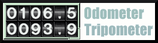

Armen Nakashian, armen@tourismo.com
What's Kodometer
Kodomter Measures your Desktop Milage. It tracks the movement
of your mouse pointer across your desktop, and renders it in
inches/feet/miles! It can do cm/meters/km too. Its most exciting
feature is the tripometer, and its utter uselessness.
Note: The next version will be USEFUL!
A screen shot. Note the fashionable lack of a titlebar.

The Odometer is the total distance traveled by the mouse since
the last odometer reset. The Tripometer is the distance
traveled by the mouse since:
- The Tripometer was reset.
- Kodometer was restarted, with the Auto Reset Trip flag on.
Menu Options
If you've gotten this far, you already know that there is a
mouse-button context menu on Kodometer, which contains a number of
choices.
- Enable
- Toggle mileage tracking. This is good if you want to cheat on
your mileage. Note: This is illegal in most countries
- Metric Display
- Because Kodometer was written by an American, it obnoxiously
assumes you want to use Inches/Feet/Miles for measurement. If
you're some sort of Eurotrash that wants to use metric
measurements, turn on this option.
- Auto Reset Trip
- This option will cause Kodometer to set the Tripometer back
to zero every time it starts up.
- Reset Trip
- Set the tripometer to zero.
- Reset Odometer
- Set the odometer back to zero. You might get in trouble
for this!
How It Works
XWindows displays are usually configured with a screen-size variable.
That is, how big your screen is in real-world measurements, not
pixels. Kodometer grabs this value and uses it come up with a DPI
(dots per inch) value for your display, and thus can relate the number
of pixels you've traversed to the number of inches the pointer appears
to have moved on the screen.
But lets be real! Its horribly inaccurate! Kodometer makes no
pretense of being even remotely accurate. In fact, someone has
measured the movement of their mouse across the screen with a ruler,
and found that the distance algorithm is almost 25% off! The
original author's response to this complaint was 'who cares?'.